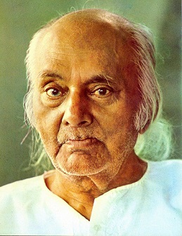

Kazi Nazrul Islam is the national poet of bangaldeh who is especially recognized as a Bidrori kobi (rebel poet) around the country. Nazryl is a famous poet, musician and philosopher of Bangladesh. The famous poet Nazrul'sn writings deal with the revolution of that period of the British givernment. His revolutionary attempt helped him to be a national poet of Bangladesh. He has raised his voice against any kinds of fascism and Subcontinent.
Awesome Writer
Nazrul's writings explored themes such as love, freedom,humanity, and revolution. He opposed all forms of bigotry and fundamentalism, including religions, caste-based and gender-based. Throughout his career, Nazrul wrote short stories, novels and essays but is best known for his songs and poems. He pioneered new music forms such as Bengali ghazals. Nazrul wrote and composed music nearly 4,000 songs(many recorded on HMV and gramaphone records), collectively known as Nazrul Geeti.

"Love has no meaning or amount." -Kazi Nazrul Islam
Awards
Jagattarini Gold Medal
1945
From the University of Calcutta for his work in Bengali Literature
Padma Bhushan
1960
One of the highest civilian honors of the Rebublic of India.
National Poet
-
Conferred the title by the Government of Bangladesh.
Ekushey Padak
1976
Bangladesh's highest civilian honours.
Poetry
Agni Bina (The Fiery Lute),1992
Sanchita (Collected poems),1925
Phanimanasa (The Cactus),1927
Chakrabak (The Flamingo),1929
Satbhai Champa (The Seven Brothers of Champa),juvenile poems,1933
Nirjhar(Fountain),1939
Natun Chand (The New Moon),1939
Morubhaskar(The Sun in the Desert),1951
Sanchayan(Collected Poems),1955
Nazrul Islam : Islami Kobita (A Collection of Islamic Poems; Dhaka, Bangladesh: Islamic Foundation,1982)
Poems and songs
Dolan Chapa(name of a faintly fragant monsoon flower),1923
Bisher Bashi(The Poison Flute),1924
Bhangar Gan(The Song of Destruction),1924 proscribe in 1924
Chhayanat(The Rga of Chhayanat),1925
Samyabadi(The Proclamer of Equality),1926
Puber Hawa(The Eastern Wind),1926
Sarbahara(The Proletariat),1926
Sindhu Hindol(The Undulation of the Sea),1927
Jinjir(Chain),1928
Pralaya Shikha(Doomsday Flame),1930 proscribed in 1930
Shesh Saogat(The Last Offerings),1958
About the Author
Made by Md.Abu Taher for a Freecodecamp tribute challenge
Tech Used
Sementic UI
Content Disclaimer
The content of this website is mostly copied from Wikipedia, BiographyBD, Thefamouspeople.Original credits goes to the respective authors.